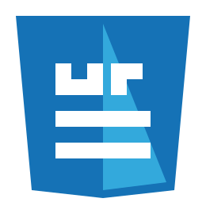

Bem-vindo ao Site de Trabalhos
Este portal é dedicado aos trabalhos da disciplina de Interface Web, proporcionando um espaço centralizado para apresentação de projetos desenvolvidos ao longo do semestre.
Sobre este Portal
Ao longo do semestre, os demais trabalhos da disciplina serão adicionados a este site. Cada projeto representa um avanço no aprendizado de tecnologias web, desde conceitos fundamentais até práticas avançadas de design e desenvolvimento.
Navegue pelas diferentes seções através do menu acima. Cada trabalho foi desenvolvido seguindo boas práticas de código, acessibilidade e responsividade, garantindo funcionamento adequado em diferentes dispositivos e navegadores.
Objetivos da Disciplina
- Dominar as tecnologias fundamentais da web: HTML, CSS e JavaScript
- Desenvolver interfaces interativas e responsivas
- Aplicar princípios de usabilidade e acessibilidade
- Utilizar frameworks e ferramentas modernas de desenvolvimento
- Criar projetos que validam nos padrões W3C
Trabalhos Inclusos
- Editor de Cartões Online (Trabalho 1)
- Ferramenta interativa para criar e personalizar cartões (aniversário, Natal, Páscoa, etc.) com suporte a edição de cores, tamanhos, imagens e texto em tempo real.
- Prova de Programação (Trabalho 2)
- Quiz interativo com perguntas de programação em tom humorístico. Implementado como Web Component com Shadow DOM, demonstrando templates e slots.
- Trabalho 3
- Formulário de tradução com API MyMemory: o usuário informa um texto em português e escolhe o idioma de destino. O sistema faz fetch da API e exibe a tradução resultante.
Recursos Utilizados
- HTML5 semântico e validado
- CSS moderno e responsivo
- Bootstrap 5 para componentes e layout
- JavaScript vanilla para interatividade
- Validação W3C em todas as páginas
Tecnologias Principais
 HTML5
Estrutura semântica e acessível
Utiliza elementos semânticos e
acessibilidade para melhor
estruturação de conteúdo
HTML5
Estrutura semântica e acessível
Utiliza elementos semânticos e
acessibilidade para melhor
estruturação de conteúdo

CSS3 Estilos modernos e responsivos Design responsivo com media queries e flexbox para todos os dispositivos JavaScript
Interatividade e dinamismo
Web Components, templates e slots
para componentes reutilizáveis
JavaScript
Interatividade e dinamismo
Web Components, templates e slots
para componentes reutilizáveis